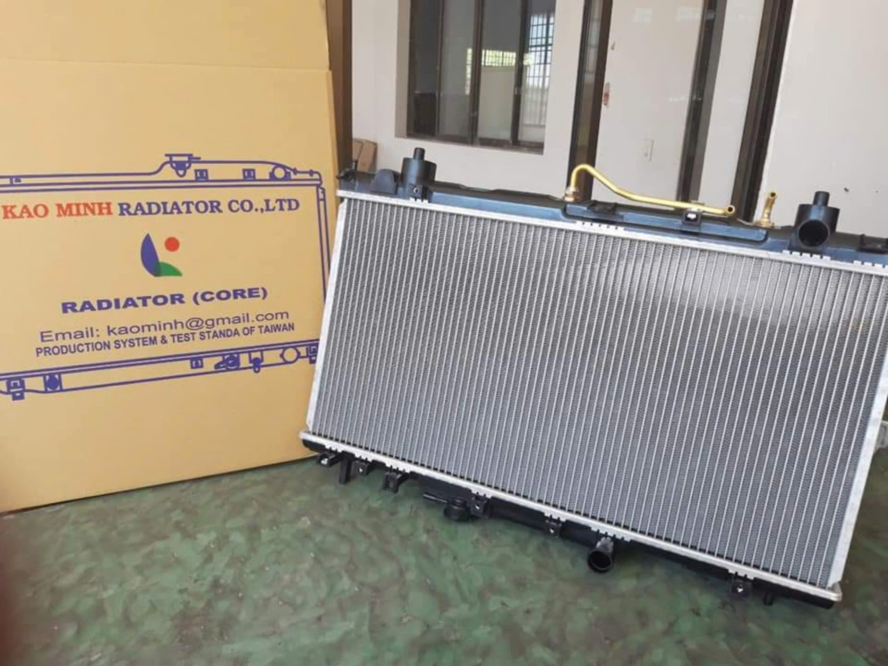

KAO MINH 高品質散熱產品系列
我們提供完整且高品質的汽車散熱系統產品，全系列皆採用強化材料與先進製程打造，確保在各種嚴苛環境下依然能發揮最佳散熱效能。

汽車散熱器
高效散熱，極致耐用
KAO MINH 汽車散熱器採用高純度鋁材與強化塑鋼，透過精密的鰭片設計與強化的管路結構，大幅提升散熱面積與效率。產品經過嚴格的壓力測試與震動測試，確保其在高溫高壓環境下的絕佳穩定性與防漏表現，有效延長引擎使用壽命。
- 高品質鋁合金核心，散熱效率最大化
- 強化塑鋼水室，耐高壓、抗腐蝕
- 精密焊接工藝，杜絕洩漏風險
- 符合或超越原廠 OEM 規格

冷凝器
快速冷卻，效能卓越
我們的冷凝器專為現代汽車空調系統設計，具備優異的熱交換性能。採用平行流 (Parallel Flow) 設計，能快速且均勻地釋放冷媒熱能，提供穩定強效的冷房效果。表面經過特殊防腐蝕處理，能有效抵抗環境侵蝕，確保長久耐用。
- 平行流設計，提升冷卻效率
- 表面防腐蝕塗層，延長產品壽命
- 輕量化結構，減少車身負擔
- 精準安裝孔位，易於安裝替換